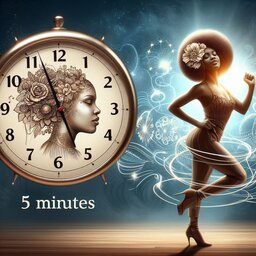

Physical and Mental Benefits
Here, we delve deep into the transformative powers of dance, offering you a comprehensive understanding of how this ancient practice can revolutionize your life in multiple dimensions. Dance is not merely movement; it's a holistic experience that rejuvenates your body, sharpens your mind, and uplifts your spirit. Through meticulously researched articles, engaging personal narratives, and authentic testimonials, we illuminate the path to enhanced physical fitness, mental clarity, and emotional balance. Explore how dance can sculpt your physique, enhance flexibility, and boost cardiovascular health. Dive into the realm of mental benefits, where dance acts as a therapeutic outlet, reducing stress, anxiety, and depression while fostering resilience and mindfulness. Uncover the emotional richness that dance brings, fostering self-expression, confidence, and a profound connection with your inner self.
We have listed some benefits below, take a look:
☑ Reduces back pain
☑ Just five minutes of dancing can calm the mind and improve your mood
☑ Strengthens the muscular system